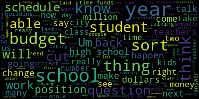
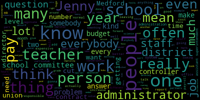
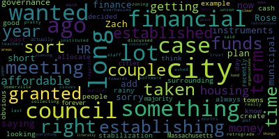

[Bears]: Welcome, welcome. We had over 60 people signed up. There's about 30 of us here now, so really appreciate all the turnout. All right, it's 6.35. We want to be respectful of people's time. Welcome to our Invest in Medford Zoom Community Forum. We will be here tonight until about eight o'clock. And I will be here with School Committee Vice Chair Jenny Graham and School Committee Secretary Paul Rousseau to talk about the Invest in Medford campaign and questions six, seven, and eight on the ballot here in Medford. to invest in our schools, our streets, and a new fire headquarters. The format we're gonna be using today is we are going to be starting off with about 10 to 15 minutes of introduction, short presentation from myself and Jenny and Paul. Then we'll be taking questions for about an hour. There is an app up called Slido. If folks have a difficulty accessing it, let me know, but it should allow you to ask a question right in here. You should also be able to upvote questions that you like. I obviously ask that folks, you know, use the tool responsibly. You know, we had open registration. This is a public meeting. Looks like most everyone here is using their name. But, you know, just want to do that digital security ask of everyone here. And after that, we'll take about 10 to 15 minutes to wrap up. If you feel like a question didn't get asked, or if you wanna follow up with us after, you can send us an email at investinmedford.gmail.com and we will do our best to answer further. And I'm sure all of, many of us are around to talk and answer questions. So with that, I will turn things over to Jenny to introduce herself and then Paul, and then we'll go from there.
[Graham]: Hi, everyone. I'm Jenny Graham. I'm the vice chair of the school committee. This is my fifth year on the school committee. So I started January 2020. And I am really excited about this very historic opportunity for us to do what we've been talking about for five years as we have navigated Terrible budgets for our schools and our kids and really to say to the community that we are asking the community to tell us that they value education as much as that they have told us for the last 5 budget season. So I'm super excited about this. I think there's a lot of questions out out in the community. I'm so happy that you're all here and hopefully we can answer some of those most pressing questions as we go tonight. So I will turn it over to Paul.
[Ruseau]: Hello, everyone. I'm Paul Rousseau. I'm on the school committee as well. I've been in office since January of 2018. And I am not going to repeat everything that was just said, but I am looking forward to the opportunity to have a budget where we are not just cutting. We have literally just cut budgets forever, at least for 40 years. And the number goes up, but that doesn't mean it is actually going up because inflation. So I look forward to perhaps having a budget season where we can talk about doing more with more and it's exciting and I look forward to hearing the questions and trying to answer them as best I can. Thank you.
[Bears]: Thank you, Paul and Jenny. So just, we've had a few more people come in, and as I noted before, we're gonna be taking questions right after our presentations and our introductions. There's an app called Slido. I think I just sent an invitation to everybody. You can ask questions using this app and upvote questions, and we will take them as they go. If we see the same question multiple times, we're probably only gonna answer it once, but really encourage folks to start putting forward their questions using the tool so that we can start to answer them. So feel free to start doing that now, and hopefully we'll have a good lineup of questions to be answered. But before that, I just wanna talk a little bit more about how we got here. So as Jenny noted, many of us in the city and many of us who run for office have seen the impact of underfunding and austerity budgets and cost growing up faster than revenues going up and the impact that's had on our city. We see that our streets are not in the condition we want them to be in. We know we have firefighters at the headquarters that is still appetited and far past the end of its useful life. And of course, as Jenny and Paul have noted, we have a school system that really has faced a lot of challenges when it comes to budgets, hiring staff, maintaining programs, maintaining buildings, things that we see every day. And two years ago in 2022, we had the fiscal 23 budget. I'm sure if folks were paying attention at the time, they noted that it was a very contentious budget season. And one of the things that came out of that was really a clear picture for the first time in a long time of the structural deficit in the city budget. the use of one-time funds to pay for ongoing expenses, the soon-to-be-expiring federal funds that even two years ago were on our radar as expiring that we were using to pay to keep our schools and our city moving. And where we are after that budget season, the city council, Councilor Collins and I tried to work with the mayor to see if we could get towards looking at an override to address that structural deficit. We weren't able to reach an agreement, but the following budget season, after a lot of negotiation, we were able to work with the mayor to form, to reach an agreement, to pass a budget ordinance and to form a financial task force. The school committee through its budget process and the council through this budget ordinance have really moved to a more transparent process that's more engaging of the public when we talk about creating the budget and understanding the challenges that we have. And the piece I want to focus on just for a minute is the financial task force. So the task force was announced in June of 2023, and consisting of the mayor, who is also the chair of the school committee, the council president, the council vice president, the school committee vice chair, and the chief of staff, also being supported by the staff in both our city departments finance, et cetera, assessing, and our school finance and operations team. So that task force was announced in June 2023. We started to meet, we put out an initial press release and public statement in September of 2023, talking about how we were going to continue to meet with the goal of coming back to folks before the end of the fiscal year with a proposal that addressed the major financial challenges facing the community. In March of 2023, sorry, 2024, we kind of put out, we announced a framework for that approach. And then in June, we released the detail of that plan, which are the three ballot questions that are now on the ballot for November 5th for the consideration of the voters of the city of Medford. Those ballot questions are question six, what should be a debt exclusion to fund the construction of a new fire headquarters? Question seven, which addresses the school system structural deficit and also the fact that right now we don't have anyone in our DPW who is dedicated to fixing our streets and sidewalks. We would bring back a dedicated street and sidewalk repair crew for the first time in many years. And question eight is about the future of our schools and then really investing and expanding our schools. So the $4 million override to invest significantly into our schools, into our educators, into programming, into making our schools what we want to be, and addressing what Jenny and Paul noted, all of the things that people want to see our schools do. Now, will we be able to do every single one of them with $4 million? No, but it's the first time we're going to be able to have a serious conversation about what transformational investment would look like in our schools. So the total of those items, the debt exclusion pays for a $30 million bond, The estimated cost of that is about $2 million per year. That's question six. Question seven is $3.5 million per year. And question eight is $4 million per year. Those amounts would be part of the property tax levy. They would be paid by residents and businesses, and it would essentially affect the tax rate. The tax rate would be about 60 cents per, 60 cents higher. So it would go up from about 8.5 dollars per $1,000 in assessed value to about $9.1 per $1,000 in assessed value. And the average impact on the average single family home is about $37 per month. So that is the summary of what we're talking about and how we got here. And, you know, the financial task force really does believe that and has stated very clearly that this is a path forward that really does bring us to some financial stability and also the ability to make significant investments in our public schools. So with that, I will end my comments and we can move into the question and answer period. I see we do have a few questions here and I really do hope folks will submit some questions in the Q and A so that we can answer any concerns and provide information to the community about the questions they see around the override. And I'm just putting out an invite once again for folks to submit their questions. The first question is, can you speak to cuts that will likely be made in our schools should the overrides not pass? That's from Melanie. H and we have five likes on that. I will go to Paul or Jenny to talk about that.
[Graham]: start and Paul, please add to. So I think there's a couple of things that we we know for sure. Right. So we know that in last year's budget, we relied on one time funds to prevent some of the cuts that were articulated. So if you were following the last budget season, the The CFO and our budget, our now budget director, Jerry McHugh, was directed to make the budget lean because we knew that we were coming off of our ability to use ESSER funds, which are COVID-related relief funds. And we knew that the budget was going to be tight. He laid out a series of cuts, essentially, that were very unpopular and unfavorable. And they included things like two literacy interventionists, two behavior specialists who work with our students. 1 nurse, 4 teachers, 4 department heads. So those positions alone are worth like 1.1 million dollars. He laid out obviously more than 1.1 million dollars worth of cuts. He laid out, I think, somewhere in the neighborhood of 2.3 million dollars. In cuts, some of the cuts actually happened, but thanks to the finance task force working with me and the mayor, we were able to get agreement that we would use some 1 time funds from the city in order to make the whole, like, not so bad. So, the, the cuts that Jerry laid out in terms of what the. Possibilities were were sort of deep and devastating. And he was also articulating at that time that there was still $2.7 million of a gap between what the city thought the budget could possibly be and what. we felt like was needed to avoid cuts. So all the positions that he talked about lost 2.7 million more dollars were on the table in cuts. We saved many of those cuts from based on some of the one-time funds and really at the expense of many other city departments who had to go back and slim back their budget. And that's a recurring theme in Medford where the school costs are accelerating I would say more quickly than sort of anywhere else in the city's budget and what I've seen in the last five years is that when something more than two and a half percent is able to come to the schools it's at the expense of another city department and there's there's just no more for the city departments to cut or give it's why the DPW Is struggling to handle our roads and sidewalks. It's why we almost didn't have Saturdays in the library. Like, all of those things come because there's just the pie is only so big for the city. And there's only so much that we can do to direct money to the schools. And it is happening at the expense of all the other things that we would like to see in the city. So this year we were able to plug part of the whole with one-time funds. It was about $1.75 million in one-time funds and additional money that came at the expense of other city departments. So what we know for sure is that that $1.75 million is not available next year. That's the sort of very definition of one-time funds. So we know that there will be cuts. If these overrides don't pass, because there, there just is. Nowhere else to to collect that money from so we certainly. Could imagine that we might get a 2 and a half percent increase. Like, 90, something percent of our costs are fixed either by contract or by things like our utilities. They're all accelerating faster than 2 and a half percent. So there's just no, there's no wiggle room there. There's, there's no room to say, but we want to keep these extra people. So we know that that will happen. What exact positions are very much that's sort of the ugly question we will grapple with if we. Um, don't see these override succeed and so is it. 1 nurse or 2 nurses is it. 2 behavior specialists or 3, all of those would be questions we'd be sort of asking and answering in the next budget. Um, but we also, we know that we. are not doing things today that we have to do, like maintain our technology, whether that's Chromebooks, laptops for teachers, any of those things. We know we're not doing that today. And if we don't do that next year, we will no longer have technology for students. And as we look to what we need to educate students, Technology is on the must have list so that means that that money that half 1Million dollars that we need for technology next year would have to come from somewhere else. So there. In our budget, 80 ish, 85% of our costs are. For staff, so when you talk about cutting the budget, there's just very little that is. discretionary in any way, unless you consider staff discretionary. I don't. But we would be looking at some very, very difficult decisions were it to come to that. And we've done that before. And it's ugly each and every time we do it. And we are the only city department since I have started that has said goodbye to humans who work in our department. So other departments have seen cuts. They've seen sort of flatlining, but we have said goodbye to people who work in our district in service to our kids. And there would be more of that before there would be less if the overpits don't pass.
[Ruseau]: And I would just add to Jenny's rosy outlook is that the We have, as Jenny mentioned, in 2020 when the budgets were level funded, we said goodbye to 40 something people. And when people hear level funded, they often think of their own budgets. You're not gonna just buy anything else. But unlike your own budgets, we have contracts with our union partners and those are still legally enforced. So, When we negotiate with our unions, it's a negotiation. We're partners with them, and we often talk about the annual increase, the cost of living increase of 2.5%, 2%, 3%, whatever it is. I think there's a misconception that that is actually how much the increase cost for that. Let's just use the teachers as an example because I brought that contract up. If we give the teachers a two and a half percent increase, give, we negotiate, it's not a gift. They, each of, except for the teachers that have been here the longest, most teachers are moving up a step, meaning they are a year more of service, and they're getting much more than 2.5 or 3%. In fact, I just did the calculations, and in 2023, a Step 10 teacher, so a teacher who had been here for 10 years, that same teacher, one year later, in 2024, would make between 12.9 and 13% more. That is. nothing weird, that's normal in districts across the, in any contract. You have another year of service, you get paid more. So that's the total for that one staff member, 12 or 13%. It's not the 2.5% we negotiated with the union. So Prop 2.5 really is a problem because even if we stuck to 2.5%, nobody could ever get more than 2.5% in our negotiations. well, that's fine, but everybody's, other than the people who've been here the longest who kind of max out, everybody else is getting more than that. And so that's part of the problem. It's not a problem, it's the way it's supposed to work, but it's also a sort of a misconception. And as for what else would be cut, you know, the 2.2 million or whatever the number was that we didn't even, get to discuss in the spring. That's like a whole elementary school of staff. It's not a couple of people. It's not an administrator. It's not a school committee getting no pay. It's not anything anybody here can think of. It is so much. And we never even could get to that conversation because It's doomsday. So how do you sit around and talk about, OK, so which elementary school are we shutting down? Are we getting rid of all of the arts, and all of music, and all of sports, and still not coming to $2.2 million? Because that is a lot of money. So what the cuts would look like, frankly, we don't have an answer that's very good. I mean, a bloodbath sounds very, very melodramatic, but it's not. It's not an exaggeration if we don't pass these, what kind of cuts we're looking at. And I have my own thoughts on where on earth we would make such major cuts. My personal preference is that everybody hurts, not just one group of students or one level. If we have to do this, because Medford votes against it, then I want to make sure the pain is distributed to all kids and families, because it's not fair to just focus on one one group of folks, everybody should have to suffer equally. So that's, it's dark. It's very dark, but that's also reality.
[Bears]: Yeah, I think just to follow up on that, the specifics of the cuts are part of the budget process, but the answer is 35 to 45 full-time equivalent positions, right? And that's...
[Ruseau]: I just wanna interrupt and say that that is based on our current pay scales. That's not, we're negotiating with our parents, we're negotiating with our teachers, all of those things are gonna go up as they normally would and should. So I think that is an absolute low ball number based on the data from June. And I expect it to be higher if we have to have that.
[Bears]: then I will clarify to at least 35 to 45 full-time equivalent positions. But what that looks like, I mean, that's, it's a huge cut, you know, that's, it's incredibly large. It's certainly would affect every building, every classroom, every program. Jenny and Paul, I just wanted to follow up on, I just wanted to follow up on one thing, Jenny, first before we go to, there are some, Good questions here that we want to get to, but what was just there was 1 follow up to this question, which was. What was actually cut this year and would anything be able to come back if the override did pass.
[Graham]: Yeah, so a couple of things that we did. Eliminate this year, our director of data reporting. Was eliminated by. Six, five or six, I'm not remembering exactly, administrative assistant positions. were eliminated. There's at least one of them is on high on my list personally to come back because the McGlynn complex is working with one administrative assistant right now for a thousand kids. That's not okay. That is a huge, it's a huge ask and a big lift. So there are some administrative assistant positions that we could look at to say what needs to come back. Literacy interventionists, we. We're able to bring, I think, 3 back into the budget, but we needed 4. we only have 2 right now. We do have 1 open position. Um, and then there were, um, there ended up being 1 elimination from the administrators union. Um, so I don't. Think that's like, super high on our list because the work has been distributed, but that would certainly be subject of a discussion. Um, and then there were some changes to the portfolio of, um. of teachers at each of our buildings. And that number change, you know, whatever, whatever we talked about in May, and then in June, and what actually transpired at the start of the year is very much a function of like how the enrollment comes through. So I do think there are some classrooms that are bigger than they have historically done. And we're sort of always watching those class sizes because Once you put too many kids in a classroom, it becomes incredibly hard for all the kids to get what they need. And we would be looking at that and maybe able to return to some of those other questions. But there's a whole bunch of other things that we've never been able to talk about doing. And I know that representatives from our teachers union was at, were at one of our early meetings this year asking us to address the overcrowding issues at the Roberts Elementary School specifically. There is no more space at that school and we continue to see enrollment climb. So there are other things that we are going to have to do. So they may not be about like bringing back a position that was cut, but talking about finally being able to fund a position that's always been needed. So that those two things are both possibilities for this when we pass this.
[Bears]: I think that's a great transition. And I think we might be able to meet both of your requests, Jenny, for a more hopeful question and talk about some of the things we could be able to do. The question was, could you provide some examples about funds from question eight? So that is the investing more in our schools question, what those could be used to improve our schools.
[Graham]: Sure. A couple of so question 8. Provides us an opportunity to talk about. What we should do, right? Like, what what have we never been able to do that? We should do and we actually have been having this conversation in budget seasons for as long as I've been here. And there's a shortage of good ideas about things that would benefit students. But the things that are sort of, I'll say highest on the list are things like living wages for all of our staff. And so when I say a living wage, I mean. raising people up out of the minimum wage category, where many of our positions have existed for a really long time. We've made a lot of progress in moving out of that minimum wage territory, but we are not yet at what is considered a living wage for somebody who lives in this area and works in this community. We also, and like, 1 of the biggest and most important things. For our district is to finish the integration of our high school and our vocational school. So, the 2 schools used to operate completely separately. They were listed as 2 different schools with the Department of elementary and secondary education. They were merged. Some years ago, 6, 7 years ago. But the two schedules were never integrated in such a way that students could move seamlessly between the two buildings. That's very complicated work. We have been at it for a good number of years. I think we finally are at the place where we have a path forward. And that will allow things like our vocational students to have space in their schedule to access Um, the arts or world language, my daughter is in the vocational program. Um, now she's a 10th grader in the robotics and engineering program. She has to take Spanish in line after school to meet her world language requirement because there's no space in her schedule. For Spanish. All of that gets fixed with changes to the schedule. And it's a very complicated set of changes because we still have to and want to preserve what makes our vocational school so unique and special. We have students who come out who are halfway to licensure, who are like a year ahead of their peers coming out of high school, going into certain trades. All of that requires a completely different schedule. So the integration of the two schedules is critically important. It's going to change the structure of the school day. It's going to change the amount of time that happens in class A versus class B versus class C. And all of that contributes to, you know, reexamining as we begin negotiations with our teachers, like what the contract is, what the requirements are, and what the costs are. Relatedly, when you think about all the rest of the schools in the district, universally, our instructional time is at the minimum that the state allows. So when we think about how much time we spend educating kids and what opportunities we're able to provide them, there's no wiggle room. There's probably many, many reasons why we don't call a late For those of you who are parents and you're like, why don't we do a 2 hour delay? There's actually probably many reasons, but 1 of the reasons is because we don't have 2 hours to spare. So, we either have to bring the kids in for a whole day. Or we're not meeting our instructional requirements. So. Looking at. The, the nature and structure and lengths of the school day are all things that become possible when we are not. Also, simultaneously talking about cutting staff, because if you think about. How your elementary school student moves through their day, for example, they, they have their core classes and they have their specials. That whole, like, the whole dynamic might need to shift in order to be able to spend another. You know, 5 minutes a day on something like math and that then may require additional specialists to be able to support. students in the building because every class changes so there's any number of ways that plays out in practice and we have to we obviously have to you know get with our partners in the union and sort of talk through all the nitty-gritty details of that but the way school day happens is going to change and in order for that to be possible it's very likely we're going to be asking teachers to do something different than they do today And therefore, like, we need the sort of financial space to be able to have a productive conversation about that.
[Ruseau]: And I will add Jenny covered a lot of that the. Some of the less sexy stuff is we have one HR person. We have one payroll person for 1,100 employees. To put that in context, Shore Collaborative has two HR people and is a teensy, teensy fraction of the size of Medford Public Schools. And so while those are just two examples of where we need to add staff, These are things when we finalize a contract with our union partners, it takes months often to get them their retro pay. Months. Because it is an exorbitant amount of work for one person to do, who's also doing weekly payroll for 1,100 people. It's, you know, we have like the city, you know, Jenny talked earlier, maybe it was Zach about how, you know, the schools, every penny we get, especially in this spring, it was by telling everybody else in the rest of the city, you can't have any of your requests. You know, we have departments with like the one man standing and just like the city, we have some departments where there's just one person left and, You know, if it takes months to get your retro pay after you finally, you know, everybody's celebrating, we finally got that contract done, it's bad for morale. It seems like an edge case, but these are the kinds of things that drive the culture of the school. I mean, from a staffing perspective, the distrust that we can successfully do anything is definitely, in my opinion, heavily influenced by the fact that we lack enough staff to do to execute on many things that in other organizations would just be so mundane and boring, it would never be a conversation. And if the most simple thing is really, really hard because there's one poor soul responsible for two or three jobs, it just isn't good for the kids. It isn't good for the staff. And there's just many, many examples where what we can do to improve things, I mean, busing, it's a long list. The, I think probably the most important thing is the school day, as Jenny mentioned, and we don't know what that will really cost exactly, because we have to negotiate that, of course. We're gonna ask people to work more time. So like anybody else, if your work day got longer, you'd expect to be paid more, so.
[Bears]: Thank you, guys. I want to move to some of our other top questions here. And folks, please feel free to submit some more questions. We have about 35, 40 minutes before we start to move into some wrapping up. But the two top questions on deck right now, we'll start with one along these lines. Is there a long-term plan to fill these budget gaps, or will we continue to need budget overrides? The answer is there is a long-term plan to increase revenue for the city. The city council has been working on that in partnership with our planning department for several years now. Two years ago, we passed the first recodification of the city zoning in 60 years. And what that does is if we allow new development and new growth, that is the only way outside of an override or a debt exclusion. that the property tax levy can increase above the 2.5%. So the last two years have actually been the best two years for new growth values in the city of Medford in the last 25 years. No matter what other people may say about that, that's just the fact you can go to the State Department of Revenue Division of Local Services website to see that information. And that has helped in the past two years, it hasn't been astronomical Cambridge, Somerville, Boston level, or even Worcester level growth, but it has been an improvement. It has staved off even more cuts. It made possible this year some of what Jenny and Paul were talking about around not having to make the cuts that we had to make. And part of that is also the one-time revenue, the one-time funding from the federal government, of course. But the city council, In partnership with the planning department. We now have a city comprehensive plan for the first time ever. We have a city housing production plan we also have our climate plan and our open space plan. And those are going, all of those are being looped into a zoning update project that the council has been working on with the planning department and our zoning consultant in associates. 11 times on that year in city council in our planning and permitting committee. We have some really, we made some initial adjustments and we have some really, I think, transformative proposals coming up around our Mystic Avenue corridor, our Salem Street corridor, our Medford Square corridor, in terms of the transforming those neighborhoods and allowing significant new growth to see modern walkable mixed use corridors with commercial space and residential space that once the zoning is completed and then once property owners and developers come in to start working on these projects would be transformative for our community in terms of raising revenue. So that is the long-term vision for how we raise revenue beyond going down the other model. I think this is maybe going into the next question a little bit, but the other model is the Winchester, Weston, Arlington, and other place model, which if folks don't know, those are places that do overrides and debt exclusions all the time. Something that may be a surprise to folks is that when Proposition 2 1⁄2 passed in 1980, the proponents of Proposition 2 1⁄2 actually said, that they expected communities to do overrides and debt exclusions regularly, and that the reason for the law was just so that it would be transparent and decided on by the voters. Now, many, 315, I think, of the 351 cities and towns in Massachusetts have since proposed an overrider or debt exclusion. Many of those communities have passed an overrider or debt exclusion. Medford is one of the few that has never even put one on the table. So we think that with our location close to Boston, the value of our community, the transformative opportunities and corridors that have not seen the economic development focus that they've needed to see. And quite frankly, if we had seen 10, 20, 30 years ago, we might be having a different conversation today. We might be having a conversation more like a Somerville or a Cambridge or even an Everett. That's a way for us to transform the community in a positive way, bring new amenities and benefits to the people who live here and increase the city's tax base significantly in the long run. I think in the medium to short term, you know, the financial task force believes that these overrides and the debt exclusion for the fire station provide significant fiscal space in the next few years for the city to not be in a budget crunch. and maybe even be a bridge entirely to that development and revenue from those new developments. I can't say that with any certainty. Certainly if there's another period, you know, if the tariff that have been proposed by a presidential candidate go into place and we see inflation at 10 or 20% again in the next couple of years, we're gonna be in really big trouble right away. If we see 2% inflation for the next 10 years, it's a different story. But, you know, That's really the thinking here. The one project that I think would fall outside of that is, of course, the new Medford High School. There is no way, and you haven't really seen any community, even Somerville with Assembly Row had to do a debt exclusion for its new high school. That is the one project that I think there would be a further request of the voters to fund. But right now, that is the only thing on the horizon that the current leadership team between the mayor, council, and school committee foresees asking the voters to do. the conditions remain reasonable and we don't have 20% tariffs on everything we import. I don't know if Jenny or Paul you want to add on that long term court plan around the budget gaps at all.
[Graham]: Just quickly to say yes to around the high school. We're several years away from that question being on the table for the voters. The money that we are required to set aside for the early stages of that project have been set aside by the council. So in so far. When we talk about free cash, 1 of the things that happened back in June was an allocation of some of the free cash money, about 3M dollars to be ready for those early stages of so that is provided for. But there's many steps that will go through before we get to a point of being being in a position to ask about that debt exclusion. 1 of the things that's very interesting, there's lots of documentation on the school building committee website. If you want to know more about that project, all of the deliverables that we have submitted are out there with the exception of some of our. Some of our enrollment projection information, and I found that part of the exercise very enlightening because they did ask us to talk about future development and we talked. You know, and we talked about in reference in partnership with the city, things like. Projects in Medford square in project over the air rights in Wellington and some of the bigger sort of coming attractions and I will follow up with the communications director to make sure that those documents get out there because. I think where they landed is pretty digestible to the public and just to understand where that falls in relationship. to some of these plans that we're talking about here from a development perspective. They're real, they're coming, there's RFPs going out and all that good stuff. But also, what effect and impact does that have on the size of the eventual Medford High School?
[Bears]: I think there's a follow-up on that, Jenny. There's a question, why do we have to wait so long for the high school debt exclusion? And I may have misspoke. That would be sooner than 5 to 10 years. The MSBA process, the stage we're in now, we would probably find out. Jenny, could you go into that a little bit more?
[Graham]: Sure, we so we're in the very 1st stage of the project, which is called the eligibility phase. Um, our, our eligibility phase started on May 1st and by July 10th, all of our deliverables were in, which usually takes about 6 months. So. Um, we crushed through that in about 2 and a half months instead of 6. and so we are waiting now for, um, to finalize the process with MSBA, where we agree on how big of a population of students we're building a building for once that happens and they get back with us after they've done their work. will move into the next phase, which is where we would hire the owner's project manager and ultimately the architect who will help conduct the feasibility study. So that's where that feasibility study money comes in. The feasibility study has to be completed in order to then have any sort of a spec that would be able to go out to debt exclusion. So it's not five to seven years away. I hope that We have students in the building to 7 years. I certainly am pushing for that, but we're probably a couple years down the road before a debt exclusion before we're ready to do that.
[Bears]: For the new high school for the new high school. Yeah. All right, Paul, I cut you off and then I will go to Matt.
[Ruseau]: Well, Jenny already covered it, so I don't need to repeat it. All right. Thank you.
[Bears]: Another panel, Matt.
[Leming]: Rose, we had a we had a very short city council meeting, but sorry, I wanted to, I just wanted to add on to what Zach was saying about the long term financial plan of the city, which was a lot of what city council doing is right Right now, is establishing sort of the instruments of municipal finance and governance that other surrounding towns have sort of taken for granted for a very long time and I don't think that's always obvious to people who are looking in a good example is the stabilization funds. you know, we decided to create a couple of rainy day funds and allocate some cash into them. And that's something that the vast majority of cities in Massachusetts have had forever that this city council only recently actually instituted. Only last year we established an affordable housing trust so that we put some money towards affordable housing. That was something that Somerville established like 30 years ago and it's been collecting money ever ever since. Our zoning really should have been overhauled a very long time ago. With regards to a lot of the HR issues that were just being discussed earlier, that's not just a case for getting retrograde, it's not just a case for the teachers union, it's a case for all pretty much all city staff. We asked HR that during a meeting a couple months ago, and they said they don't have the financial software to do those calculations. They literally have to calculate everything by hand on paper. That's not something that most other organizations have to do. A lot of our long-term financial planning, just to be clear, is establishing be, it's just getting things that other areas have taken for granted. So I just wanted to make that point. I'll get off the panel.
[Bears]: I'm just missing those. That's really a really important point. Sometimes I take for granted that people don't know that we don't have such basic things that I forget to mention that we're establishing things for the first time here in Medford that many communities have had for decades, if not longer. Jack, could I speak to the admin is heavy question? Sure, yeah, we'll jump back to that and then we can talk about a couple other questions.
[Ruseau]: Sorry, so I've been on the school committee for seven years, and while running for office, I heard that Medford had this massive administrative crew of people, vastly more than every other district around us, as is the usual assertion for every claim. And it turns out that, of course, that isn't true. And while we do have two assistant superintendents and a superintendent and a director of finance, What? What other districts often have, if they don't have as many assistant superintendents, is many, many, many more lower-level administrators. In some districts, every single building has, by grade level, a person responsible for curriculum, for math at fifth grade, at this school, a person responsible for science at this grade, at this school. We have none of that. Done. So our administrators are doing the work of, frankly, so many people, it's sort of, again, it's absurd. And the work they're doing is not work that's optional. A lot of times there's enormous amounts of reporting and regulatory stuff that they're involved in. They execute on all the things the school committee asked them to do. And we just do not have a heavy administrative, we don't have a lot of administrators. And administrators, also people have very different ideas on what the word administrator means. We have an administrator's union, which has our directors of curriculum, director of science, director of math. And my entire time I have been on the school committee, we have had people doing double duty, sometimes triple duty. covering three different departments. And, you know, that's just not normal in other school districts that are even remotely better funded. And when you have one person who's responsible for humanities, social studies, and English, and is covering foreign language, First of all, that person usually will have a specialty, which, you know, maybe that's English. So how much are they able to really do in those other disciplines? And, you know, we have great teachers, and often that is the only reason we have continued to have a quality education in Medford at all, is because our teachers are good. So the lack of anybody above, Providing any kind of leadership has often not been the end of the world. But things change. The state changes the guidelines for what is required for social studies curriculum. And these are constantly changing. And when you don't have any leaders to focus on that, because the teachers are busy. They're with the students. If you don't have any of these administrators, then we don't have the ability to get that done. We have been working on the science of reading and that's been an assistant superintendent, a director of humanities and a whole host of other staff and They're not, it's not like a five minute part of their job. It's like a huge, huge effort that's multi-years. So we are not only not administration heavy, I think we are administration light. But again, my inclusion of administration is having enough people in HR and payroll. I think of administration as the people in central office. And I think people have very different ideas of what administration means, but we are definitely, we don't have anywhere near enough. Do we need two more assistant superintendents? No. Do I think we even need another assistant superintendent? No. We need people working under them. that they can delegate to because they are completely swamped with incoming mandates and crises that are normal. They're normal parts of running a school system that can often swallow up anything that they were already in the process of actually doing. So I just wanted to answer that question. Thank you.
[Bears]: Thanks. I want to go to the next question that we have a bunch of votes on. which is, do we know what other towns have done to get overrides to pass given that Medford is a laggard compared to similar towns? I will defer to my colleagues in just a moment, but I wish there was a magic formula, because I'd be less stressed out about whether or not this question or these questions are going to pass. I think, to be honest, the first step is the city government needs to have the courage to ask. This is the first time the city government has had the courage to ask the voters. I don't think anyone thinks, oh, let's raise our taxes is a popular thing for anyone to ask anyone else. And I understand like deeply and completely that it's a difficult decision for a lot of people. I think we all understand that. I think we also know that there's a lot of difficult decisions that have been had to be made or continue to be making when it comes to layoffs? And do we pay our staff enough? And do we have this department exist anymore? Things that are really fundamental to the functioning of city government. And, you know, do we have our firefighters have a building where they feel like they're not going to get sick in that building, right? Like, these are really human deep questions, just as much as am I able to afford the tax increase is a really human deep question for a lot of people. And I think for a long time, city government felt like we could keep asking the community to not invest in city government, to do more with less, and found creative or uncreative or short-term, not long-term ways to make that work. And the last five years, especially with the pandemic and with the cost growth, we hit the wall, right? And so now we don't have another choice but to ask. And I think we've been clear that if we ask and we And the answer is no. And there's a lot of very, very hard choices that come after that. And so that's the first step I think to getting an override to pass is that an override is on the ballot. From what other towns have done what we need to do I think Matt really spoke to it and Paul spoke to it and Jenny spoke to it as well right like How do one of the big things that we're talking about the financial task force is how do we make sure that we address the scope of problems that is significant enough that people can see the investment that we're asking them to make. Because if we don't do a big enough thing and we ask people to do this and they don't actually see a change. we're not engendering any more trust than we've been engendering with the lack of progress that the city has been making for a long time. Um, so I'm really encouraged. I think we've done a lot of public education, quite frankly, over the last two to four years around the difficulties and issues that we see in our schools and on our streets and in our city departments, where a lot of people are saying, Hey, you know, maybe I don't want to pay more taxes. Maybe it will be a challenge for me to figure out how to afford to pay more taxes, but also I care about this community. And I know that we need to do these things because. And we can just see it, right? Like it's literally the environment that we live in and the buildings that our kids are in and the teachers who are overworked and the city employees who are overworked, right? Like we see and feel the reality and I think people are ready to make this investment. So I've been really encouraged talking to my neighbors, been really encouraged talking to lots of folks across the city that these things are going to pass. And I think the good thing that if we move forward on these is it sets a foundation for us to show progress, to show improvement, to maybe get the financial systems and softwares in place where we can point to a dashboard instead of a spreadsheet, point to, you know, pull data in a day instead of a week to answer questions more quickly. And my hope is to see that virtuous cycle of investment beginning more investment and city government having the resources that it needs to do its job, meaning that the public trust the city can do its job. So that is my real hope. I feel good right now. I'm going to be working very hard over the next 27 days, talking to people, getting people, raising money to send out the mailers, doing all the different things that we need to do to make sure that we get a yes vote on November 5th. But that's my kind of pitch and spiel around what do we need to do to get an override to pass and why we went this direction. Paul, I see that you're next.
[Ruseau]: Yes, I'm itching to answer the question about short staff. Since the schools are short-staffed, are we seeing high rates of burnout, turnover, and could we use these funds to help improve retention in the schools? So we are. We lost our not treasurer, I forget, the controller to Somerville, making 20 grand more to do the same job. The catch here for that is that because we're missing so many positions, people leaving for better pay, or even if they aren't leaving for better pay, they are leaving for dramatically less work. And I don't mean to suggest they don't want to work or that they're lazy. I mean, A lot of these folks that are leaving are working absurd numbers of hours for the pay. And it's absurd numbers of hours regardless of the pay. People want to actually do something other than just work. And so when we lose somebody like a... Controller, she didn't just leave with the knowledge of what it's to technically do the job of the controller. She left with all the other knowledge for all the other stuff she had been doing because there was nobody else to do it. And so that vanishes. We hire a new controller who comes in to be a controller. And then there's just this gigantic gap. And that has happened many times in my time here. And replacing that person with a better salary, which you often have to do to even recruit somebody, It solves the problem of that slot, but you didn't get what you had before, not even close, because that person rarely was doing the job that is their job description. They were doing much more and it's a huge problem. So when we talk about like, improving retention is often a very expensive endeavor. It isn't just about people giving people a raise, which sometimes that is an answer. It is about adding whole other people, more people to do the work. And that's always a dramatically more expensive. If you can give somebody a $20,000 raise, that's a lot cheaper than buying another person for 90,000 or whatever hiring, not buying. So it's, you know, Some of these problems are truly very expensive to solve. But that's just what it costs to, you know, our business office is understaffed. And I've talked about that so much. But as a school committee member, you know, right out of the gate, I had all kinds of questions. that could never be answered and have not been answered in seven years. Why? Because if we had a modern financial system, somebody would go in, they'd write some little report and click print or email me an Excel spreadsheet. Without those systems, it's weeks of somebody going through multiple systems trying to figure out what's that over there, what's that over there. And I'm not exaggerating. Like we have things, there's a monthly report where we're legally supposed to get every month, a hires and terminations report. All the districts around us get it. And I know about it because of the Shore Collaborative where I'm the Medford School Committee representative. Everybody gets it, the Shore gets it. We don't get it. Why? Because we don't have a modern system. Our HR is not connected to our payroll. And is getting that report worth paying somebody for 40 or 80 hours of work every month? No, it's not. So this burnout issue is a really important one, but it's also very expensive to solve. It is not just a matter of looking at how much does a controller make in other districts and say, oh, we're going to pay them that. they're still gonna burn out because they're doing multiple jobs. Sorry to beat that one down, but it's been seven years of complaining about this.
[Bears]: I don't know if anyone can tell that Paul is the secretary of the school committee, because one of the jobs that Paul has to do is sign every bill. So he's pretty familiar with that side of things. I think Jenny raised the same exact point, though, around our class sizes, right? When you ask teachers and paras to have more kids in the room, it gets harder to educate the kids. And if you can have four less kids in a room, that may be the difference between someone staying or someone going somewhere else where the class sizes are smaller. To be honest, there's burnout and turnover in the school. Sure, I'm on the city council and I spend a lot more time on the city side of things. We have a lot of turnover and burnout on the city side too. A lot of great folks come in, build some relationships. They're here for a year, they're here for two years, and then they get offered a job that isn't as many hours, is at a higher pay rate in another city or in the private sector, and they move on. I mean, I think the greatest example of this is our issue hiring a city solicitor. We've raised the pay like two or three times now. hoping that this latest one, which was just a month ago, might actually, or two months ago, might actually lock us in and hopefully we can hire someone. But yeah, people come in, they work hard, they realize that they don't have the, they're working more or doing more jobs that they would have to do. And then, you know, doing two jobs here where they might be able to do one job in another community, they move on. And I think we see that across the board, city and schools. I wanna go to the next question. We'll just want to add in quickly that there was a clarification on the heavy administrator talking about the curriculum and department heads, not more superintendents. So just wanted to note that. Thanks for putting that clarification. On the questions here that are left and we're coming up, you know, we got to probably about 10 or so minutes left if folks want to throw another question into the chat. The next one is, has there been discussions about an owner-occupied property tax exemption like Cambridge and Somerville have, and is that something the city council could pass? So every year we use, we set the tax rate. I won't go into the, take me more than 10 minutes to go into the complexities of exactly how Proposition 2 1⁄2 works, but we set the tax rate every year. And one of the options that is, you know, we technically vote to consider is, could we do an owner-occupied property tax exemption? What that means is that the city would set a certain percentage of the average residential bill. And if you were an owner-occupied unit, you would get that, essentially, your tax bill would go down by that amount. Let's use some round numbers here. Let's say it's $3,000. that would be like a 30% exemption. Let's say it's $3,000. Now, I don't know off the top of my head, it's actually probably pretty close. How that would work is everybody who pays a residential tax bill from, if your owner occupied, regardless of your value, you'd get $3,000 off your bill. So if your house, essentially it creates a breakeven point where, And it's a little more complicated than this, but basically everyone who's owner-occupied would get that cut off. But that money doesn't just go away. The city can't afford to actually have the taxes go down. So that amount that owner-occupants get, that reduction, gets shifted onto people who don't get the owner-occupant exemption. So essentially, you'd be shifting the city, the cost of the property tax on residential properties, off of owner-occupants onto non-owner-occupants. But the other side of that is that that actually changes the tax rate. It essentially means instead of a flat residential tax rate on residential tax bills, you end up with a progressive rate. I don't actually think that's a bad thing, but one of the reasons that previous councils prior to 2022 didn't pass it is it actually would raise taxes on owner occupants in high value homes. So if your home is worth more than the breakeven point, even though you get the exemption, the tax rates going up more than the exemptions, you actually pay more. The point being that it's a complicated conversation. Essentially, if you are in a condo or a small single family and you're living in that, you're an owner occupant, your taxes will probably go down. If you're in an expensive single family or a multifamily, your taxes are probably going up. If you're a certainly large apartment buildings, those there'd be significant increase because the rate would go up. So it's not just this, you know, everyone who gets an if we implemented it tomorrow, that everyone would get this benefit in the same way. It's a complicated conversation. One of the reasons we haven't implemented it is because both the previous city assessor and the current city assessor say it would take them about a year to do the calculations and get everything in order. And they'd probably need one to two more staff people in the assessing office just to process the applications for the owner occupancy exemption. So it's a significant undertaking. A lot of places like Everett's and Somerville's and Cambridge's did this a long time ago when the conversation was a little bit different because of the property values that we see today. But yeah, so we've talked about it a lot. I think I actually know too much about it because I don't know that I explained it particularly well right now. But we've talked about it every year that we've set the tax rate since I've been on the council and I know on prior councils before that. It would be a complicated undertaking, and it isn't the silver bullet that it's presented to be a lot of the time. But do I think it's a bad idea? No, and I'd be willing to move forward on it if folks felt we could make the time and effort and make it a priority personally. Next question is on The when would we expect to see changes to the high school vocational schedule, if we were able to move forward and if the negotiations were able to be concluded.
[Graham]: If you have high school students, you know that this is desperately. A long time coming, like I said earlier, my daughter is in the robotics and engineering program. She takes. There's no opportunity for her to take. An art class, which is the other sort of half of her brain. So she struggles with that, but she takes Spanish online because there's no space in her schedule to take a language, which is a graduation requirement. And certainly, if you are thinking about pursuing a 4 year college experience after high school, they want to know that you have some sort of full language for some number of years. So, to answer the question, there is the changing the schedule is a huge undertaking. We are doing everything we can on the administrative side to be as ready as we can possibly be. Before we are able to sort of have this productive conversation with with our teachers union. which hopefully can happen quickly once these questions are successful. So there are some sort of like, I'll call them drop dead dates in the mix, right? So the high school students have to pick their schedule by like, say mid April, which would mean if you sort of back up from there, the offering and the new schedule would have to be ready in enough time to like, Build everything so that students could pick their schedule in April. So we really are looking at a very tight window, but the administration. Is working really hard to make this a reality for next school year. I. I think they think it's a huge amount of work and I think they are concerned about the viability of getting to that, that date. What I have said is we can't wait another year. Another class of kids can't wait for this to go another year. So, I personally am really pushing. that this override passes, obviously we will have the opportunity to invest some resource in making this a reality. And obviously we have to go through the negotiating process and we are talking about that. I'm sure the teachers union is talking about that. I want those conversations to be collaborative and productive. And in saying that, that also means everybody's sort of ready and prepared for the discussion. And so part of what I'm asking of the school administration is that they get ready and prepared about all the things that have to happen to make the schedule a reality. But I am very hopeful that if these pass, we will see maybe not like the final, final, final change by fall of next year, but hopefully pretty darn close. Hopefully next year your students won't have to take a foreign language online. But there's a lot of work there. Everybody knows that there's a lot of work there. And I think if you talk to anybody, any high school student, if you talk to parents of high school students, if you talk to teachers in the high school, like we've sort of all known this has to happen for any number of years. And the time is now. So we're going to push on that as best we can to make that a reality for fall.
[Ruseau]: Awesome. You're here. I'm with Jenny on the, you know, it's so long overdue.
[Bears]: Yeah.
[Graham]: Yeah.
[Bears]: And I think, yeah, I think everybody who's everyone I've talked to talks about it gets that it's a heavy lift, but also that getting prepared to make that lift everyone's on that page. All right, we got two more questions left. We're about on time. Well, two and a half, there's a dueling questions for anyone who's seen it at the end and we'll take that one last, but just Rebecca's question is money from the override only required to go to the directed budget for the first year and after that could go anywhere else in the city budget. There's two answers to this question. Proposition two and a half date law requires that in the first year, it goes towards the specific purposes outlined in the question. Those appropriations would be made people would be hired, things would be purchased, contracts would be signed based on those things. In the second year, could the mayor and the school committee and the council then fire everybody that they just hired and go completely in another direction? And I mean, is it legally allowed? Yes, is it something that would be in the realm of possibility? Absolutely not. I think we've all been very, very clear that what the purpose of these overrides are for. And I don't think anyone here, I think we've already been very clear that we don't like the fact that there are layoffs and position cuts and things happening now. I certainly don't think that some massive bait and switch, I don't even know what we would put it into, to be honest. These are the things that we want to do with the money. These are the things that we think are the priority of the city. And yeah, there's a little bit of trust that comes from that, and I acknowledge that, but we've been very clear about what these priorities are. And a lot of it, especially on the school side, is also subject to negotiation, collective bargaining agreements, other laws, and that's what it is. We've been very clear that if these overrides are to pass, they would fund our schools, they would fund our educators, they would fund the people who work in our schools, they would hire a DPW street crew. And what I can say is that if the debt exclusion passes question six, that just have to go to the fire station. That's the law. They can only pay for the bond for the fire station, period. So that's the answer to that question. And can I just add to that?
[Graham]: Yeah. Actually, with Paul's help, hopped in the time machine and went back through our school budgets. And to see like, do we, you know, to answer the question, like, do we defund the schools ever? And the answer is basically no. So there are years where we've flatlined the budget of the schools. So like we did for fiscal year 2021. So we gave the schools the same exact appropriation for FY21 as they had for FY20. That is effectively a cut in order to make that work. We laid off staff. So I would call that a flat line, right? Like it's effectively a cut, but the dollars from last year and the dollars from this year are the same. So we have done that, and we have not invested enough, right? In our school budget to grow the budget enough to sort of prevent. But I had to go back to, like, the 80s to see a year where the number for this year was lower than the number for last year. And I think that was, like, in the middle of the financial crisis. So. Medford certainly does have some history of flatlining the budget or for under investing, but we really don't have a history of defunding the school budget. So that is what would have to happen to, like, move this money. We would have to be making choices to defund the school budget a year from now. That is not why I do this work. That is not why people pour their heart and their soul into helping lead our schools. I'm a no on any proposal that defunds our schools. I think the council, without exception, would also not agree to defund our schools. So even if it were proposed, I don't think there's any support for that and I also don't think having worked with the council and the mayor on the finance task force that anybody even wants to entertain that idea. The entire premise of this is to do more. So. just maybe rest assured that we don't have even a history of doing this sort of scary thing that is legally possible, but would require an inordinate amount of support to make it happen. And there is no support for that concept here.
[Bears]: Thanks, Jenny. I want to move to wrap up on The last couple of questions. So we have dueling questions that I think probably none of us here on the panel are the people who should be answering these questions. So I would ask us not to answer them, but I will read them since they have been asked. They are, how could the CC and SC accept a pay raise when you say we're in dire need of money and then ask for an override? And that has been also countered with the question, how can we increase CC and SC pay to increase diversity on those bodies so they represent the city's diverse population? Those are both. viewpoints that people hold. We have a final question here, which is what is the impact of union student leadership, either having had posed or unsure yet on the overhead set exclusion. So that's that the fire union is not supportive. And the teachers union has not yet made a decision. I don't I don't know what the impact of it is. Certainly, I would hope that in the case of the fire union, that they could put aside some of their differences with the mayor. And I think the funding of this project and that we are prioritizing funding a new fire station should be considered independently of the disputes that the mayor and the fire union have had over fire station design and other matters. That's my personal opinion. And I know I've spoken to a lot of our educators about these questions and some support, some oppose, and I'll leave it up to the Medford Teachers Association and other educator unions here in the city to make the decision that they need to make in the time that they need to make it. With that, I wanted to wrap up quickly unless, Paul, Jenny, you have anything else you wanna add before I just put out a few pitches to the folks who are still here.
[Ruseau]: I just want to add that. These are great questions. There are undoubtedly 500 other questions that a group this size has. And I know that I certainly, and I'm quite sure the other elected officials here, would be happy to make ourselves available to sit with you one-on-one to answer your questions and to get into the details. As Zach and Jenny and Matt alluded to, some of these things are sort of outrageously complicated. and not very well suited to this kind of a setting. And really, I will make myself available to anyone that wants to have a conversation about understanding something because a lot of the stuff is really, really hard.
[Bears]: There are also, thanks, Paul. To that point, there's also two more opportunities coming up for folks. If you thought of a question as we're wrapping up, or you think of one after you leave here tonight, Next Tuesday at 6pm we have a city council committee of the whole meeting in the city council chamber, where we will be talking kind of doing a similar q amp a style format, you'll hear from members of the council and basically answering the questions they feel like they can answer asked by the public. Then we also have an in-person version of this event, an Invest in Medford community forum, Monday, October 21st at 7pm, and that's going to be at the library. So those are two more opportunities that we have for very similar events. As Paul noted, you can reach out to us, investinmedford.gmail.com, or reach out to your elected officials. Our contact information is online as well. Jenny, if you want to say anything, and then I'm just going to put a couple of resources in the chat really quick.
[Graham]: Zach, the only thing I would say is the city put out earlier today a graphic about how we've used ARPA dollars, which I think has been a question that's out there. So check out the city's Facebook page or website to see that. We have a sort of a deeper dive into question 7 and 8 that are. That is now done sort of almost hot off the presses and I think we can get that out in the morning. So be on the lookout for that. Where I'm happy to answer questions offline. I know many of you please don't hesitate to reach out. This is such a significant priority for me over the next couple of weeks, because it sets the stage for what the rest of this year becomes, and frankly, for what the future for our students becomes. So it's a big deal. I'm happy to answer questions any time. I will see maybe some of you at Walking Wednesday tomorrow at the Roberts, but grab me any time. You have a question, happy to do it.
[Bears]: Thanks so much, Jenny. On that note, just want to share again, this was an Invest in Medford community forum. If you're interested, you can go to investinmedford.com where you can find out some more information here. You can see our wonderful photos and of course, but we have the explanations on the three questions, including their full text. We have our impact calculator based on fiscal 24 assessed values from the assessor's office and the division of local services override impact calculator here. If you are, we're compelled tonight to get more involved, you can get involved. You can submit a testimonial about why you support these questions. You can donate to the campaign so that we can get our message out there in these last three and a half, four weeks, get a yard sign. We still have a few left, Not many. And you can sign up to Canvas and talk to your neighbors about these important issues. There's also some endorsements up here. We do have endorsements from 11 of the 14 city elected officials. We have endorsements from three of our four state elected officials. We have a few organizations up here hoping to add some more soon. And this great FAQ page. which really gets into some of the details on what would be the impact if the overrides don't pass? Why do we need the overrides? What are overrides and debt exclusions? How will they impact your taxes? And then just some of the information about how to measure taxes compared to other cities. You know, one thing that I think is just really important to note, our residential tax rate is the 93rd lowest out of the 97 MA cities and towns with population over 20,000. And there's just a lot more here on the website. So if you are looking for more information, looking to share, looking to join our campaign, you can go to investinmedford.com. And we really hope that folks here will strongly consider and commit to vote yes on questions six, seven, and eight on Tuesday, November 5th. Mail voting has already started. Early voting starts Saturday, October 19th. And election day, if you're voting at your polling location, if you haven't made your choice by Tuesday, November 5th, polling locations will be open 7 a.m. to 8 p.m. on November 5th. So we really, really hope that everyone here will vote. And I think it's fair to say that this panel hopes that folks will vote yes. Thanks everybody for a wonderful evening. Really appreciate everyone being here and hope to see you over the next few weeks as we lead up to election day.
[Ruseau]: Bye. Thank you everyone.
[Graham]: Thanks everyone.
|
total time: 37.72 minutes total words: 6255 |
total time: 26.01 minutes total words: 3929  |
total time: 18.3 minutes total words: 2611  |
total time: 2.1 minutes total words: 308  |
{kind=link}
{kind=link}
{kind=link}
{kind=link}